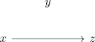

maximal K_r free graph and transitivity of missing edges
Proposition
Let $G = ([n], E)$ be a graph which does not contain $K_{r+1}$ as subgraph and is maximal with respect to this property. Then for all $x,y,z \in [n]$ wtih $xy,y,z \in E$ implies $xz \not\in E$
Proof
Suppose $xy,yz \not\in E$ but $xz \in E$.
then we have

$d(y) < d(x)$ or $d(y) < d(z)$
w.l.o.g. only $d(y) < d(x)$:
Now construct a graph $G'$ via
\begin{align*}
V(G') = (V(G) \setminus \{y\} ) \cup \{x'\}
\end{align*}
with
\begin{align*}
N_G(x) = N_G(x')
\end{align*}
Then in particular $e(G) < e(G) + d(x) - d(y) = e(G')$ since $d(x) > d(y)$ and $G'$ contains no $K_{r+1}$:
- $xx'\not\in e(G')$ by construction
- so any clique in $G'$ - which necessarily contains $x'$ - could be mirrored by a clique in $\{x\} \cup N_G(x)$, contradiction to the assumption that $G$ is clique free
$d(y) \geq d(x),d(y) \geq d(z)$
Now construct a graph $G'$ via
\begin{align*}
V(G') = (V(G) \setminus \{x,y\} ) \cup \{y', y''\}
\end{align*}
with
\begin{align*}
N_G(y) =& N_G(y')
=& N_G(y'')
\end{align*}
Then in particular $e(G) < e(G) - (d(x) + d(z) - 1) + 2 d(y) = e(G')$ since $d(x), d(z) \leq d(y)$ and $G'$ contains no $K_{r+1}$:
- $yy', yy'', y'y''\not\in e(G')$ by construction
- so any clique in $G'$ - which necessarily contains exactly one of $y'$ or $y''$ - could be mirrored by a clique in $\{y\} \cup N_G(y)$, contradiction to the assumption that $G$ is clique free